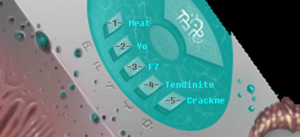

| Intro
Voici un petit keygen pour le
crackme Méloquynthe. Ce keygen n'a été
pour moi qu'un prétexte pour travailler
sur des scripts avec Windbg. Ce debugger n'est
pas facile à prendre en main et son script
n'est pas des plus simples. Mais avec un peu de
persistance, on se rend vite compte des possibilités
énormes qu'il propose.
"Comment ça ? Un
auteur de crackme qui fournit lui-même un
keygen ! C'est un scandale ! Mais c'est impossible
! C'est contre la tradition traditionnellement
traditionnelle !"
Ok, ok... j'assume. ;p
Voilà déjà
quelques temps que ce keygen existe. J'ai bien
essayé d'attendre que des soluces sortent
avant de le publier. Mais force est de constater
que le Méloquynthe est très vite
passé aux oubliettes... à mon grand
regret...
Les documentations au sujet des
scripts sous Windbg sont quasi nulles. Et le peu
que l'on puisse trouver sur Internet est surtout
axé "débugage système
et driver".
Au delà de la fantaisie, j'espère
que le script de ce keygen apportera quelque chose
à l'édifice et permettra à
certains d'entre vous d'aborder ce debugger tant
boudé.
Ce keygen utilise des techniques
d'animations ultrasophistiquées qui ont
demandé des heures et des heures de calculs.
Depuis les bêtas tests, un certain Georges
Lucas ne cesse de me harceler au téléphone.
Il insiste pour m'acheter mon keygen et toute
la technologie qui va avec. Ça en devient
lourd je trouve... j'aimerais bien qu'il arrête
un peu... ;p
Je vous présente donc
Rillettes le squelette.
D'une virilité douteuse, ce personnage
énigmatique, sorti tout droit de mon imagination
débordante d'imaginaire, a réussi
à dépasser, on ne sait par quel
prodige, les limites humaines en matière
de chorégraphie de danse moderne. Sportif
de très haut niveau, d'une souplesse extraordinaire
et doté d'un don incontestable à
l'improvisation, Rillettes vous époustouflera
sans aucun doute dans ses prouesses techniques
et créatives.
Préparation
Pour faire fonctionner ce keygen,
quelques manipulations sont indispensables. (âmes
sensibles s'abstenir ;)
Installation de Windbg :
- Téléchargez et installez Windbg
(ici)
Paramétrage du système afin que
les symboles utiles puissent être téléchargés
automatiquement :
Méthode 1 (tout à
la main...comme un grand)
- Allez dans panneau de configuration->
Système-> Avancé-> Variables d'environnement
- Dans les Variables
Utilisateur, ajoutez une nouvelle
variable avec comme nom _NT_SYMBOL_PATH
et comme valeur srv*c:\Symbols*http://msdl.microsoft.com/download/symbols
Cette variable va permettre à Windbg
de télécharger automatiquement
les symboles recherchés et nom trouvés.
Les symboles ainsi obtenus sont placés
dans c:\Symbols.
Méthode 2 (celle du
fainéant)
- Téléchargez et installez
l'utilitaire liveKd (ici)
- Lancez le au moins une fois
Au premier lancement, liveKd vérifie
la présence de la variable _NT_SYMBOL_PATH.
Si celle-ci n'existe pas, il vous proposera
de la créer. Dites oui, laissez le
dossier des symboles par défaut,
laissez liveKd s'initialiser et fermez le.
Pour info, le keygen a juste
besoin des symboles de ntdll.dll pour fonctionner.
Installation du Méloquynthe
:
- Téléchargez le Méloquynthe
(ici)
- Dézippez-le où vous voulez.
Installation du Keygen :
- Téléchargez le keygen (ici)
- Dézippez-le dans le répertoire
où est installé Windbg
Les scripts doivent impérativement
se trouver dans un dossier nommé keygen_melo5.
Chargement du Méloquynthe
:
- Créez un raccourcie de Windbg.exe
- Assurez vous que la caractéristique
Démarrer dans
du raccourci indique bien le chemin d'installation
de Windbg. Ceci est très important
! Sans quoi, le script risque de ne pas être
trouvé.
- Charger l'exécutable dans Windbg
en faisant glisser le Méloquynthe sur
le raccourci.
Vous pouvez aussi démarrer Windbg avec
le raccourci et charger le Méloquynthe
avec Ctrl+E ou
Menu:File->Open Executable...
Ça y est :) tout est
en place. Passons au jeu maintenant :)
Le Jeu
Tout se passe dans la fenêtre
Command de Windbg.
Il est possible de la faire apparaître avec
Alt+1 ou Menu:View->Command.
Tapez cette ligne de commande
+ Entrée :
$$><keygen_melo5/go.inc;
C'est parti ! Bienvenue dans
un monde merveilleux rempli de rêves et
de bonheur. Bienvenue dans le monde de Rillettes
le squelette !
Pour jouer à ce jeu, il
faut :
- Avoir envie
- Etre à un âge où manipuler
une souris n'est plus (ou pas encore) un problème
- ne pas être sourd
Pour réussir à
ce jeu, il faut :
- pouvoir jouer à ce jeu (voir règles
précédentes)
- être rapide
- être patient
Régle du jeu :
Les ponctuations vocales de
la musique sont au nombre de 5. Elles sont symbolisées
par les 5 boutons de l'interface de Meat:

Une combinaison de 5 samples
vocaux est créé au démarrage.
Cette combinaison est représentée
sur la ligne la plus basse de l'animation dans
la fenêtre Command.
Vous devrez alors cliquer sur le bon bouton lorsque
le sample attendu se fait entendre. Vous serez
donc amené à ignorer certains samples
vocaux pour ne valider que les samples en fonction
de la combinaison. Chaque bonne validation vous
fera avancer d'un cran jusqu'à valider
la combinaison complète et vous permettre
d'assister à l'apothéose de la prestation
de Rillettes. :)
Vous remarquerez que Rillettes,
malgré le fait d'être plutôt
bavard, a aussi le don d'anticiper les samples
vocaux. Il vous en fera profiter :)
Bien entendu, la moindre erreur
aura pour effet de générer une nouvelle
combinaison dans le seul et unique but de jouer
sur vos nerfs... et vos tendons à la même
occasion.
Info : Si votre système
ne détient pas encore les symboles utiles
au script, il est possible de remarquer quelques
"blocages" lorsque des symboles sont
en téléchargement. Ce phénomène
disparaît des utilisations ultérieures
du script. |